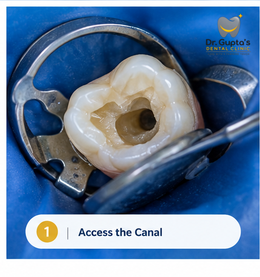
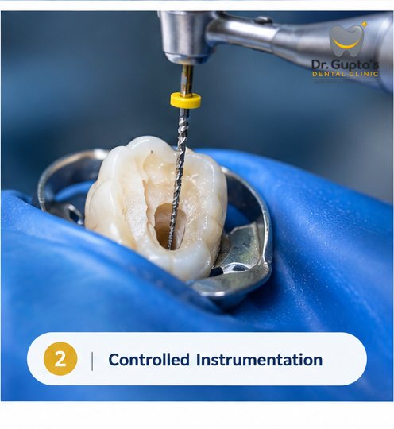
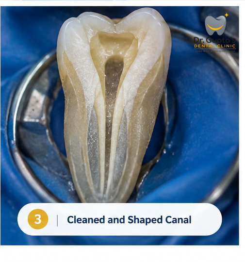

OUR DIFFERENCES
Advanced
Endomotor
Controlled movement for precise root canal treatment.
Modern endodontic treatment uses carefully controlled instrumentation to clean and shape root canals. An advanced endomotor helps regulate the movement of specialised files according to the clinical requirements of each tooth.
Book Your Appointment →matters
♡

What is an endomotor?
An endomotor is a specialised dental device used during root canal treatment to control the movement of endodontic instruments inside the root canal.
Depending on the system and clinical situation, the motor can provide controlled rotary or reciprocating movement, helping the dentist work with greater control while preparing the canal.
Why do we use an advanced endomotor?
Root canals can be narrow, curved and anatomically complex. Controlled instrumentation can help the dentist prepare the canal systematically while working within the requirements of the individual tooth.
Controlled
instrument movement
Adjustable speed
and torque
Supports precise
canal preparation
Useful for different
canal situations
Efficient and
controlled workflow
How does it work?
Endodontic treatment involves several carefully controlled stages. The endomotor is used as one part of this overall process rather than as a replacement for clinical judgment.

Access thecanal

Controlledinstrumentation

Cleaned andshaped canal
Rotary or reciprocating movement?
Different endodontic systems use different patterns of file movement. Some instruments rotate continuously, while others use a controlled reciprocating motion.
The choice depends on the instrumentation system, canal anatomy and the dentist's clinical judgment.
Rotary
The file rotates continuously according to the selected operating parameters.
Reciprocating
The file moves through controlled alternating clockwise and counter-clockwise movements.
Clinical selection
The appropriate system and technique are selected according to the individual clinical situation.
Speed
Controlled operating speed helps the dentist use the selected instrument according to the manufacturer's recommended parameters and the clinical situation.
Torque
Torque control helps regulate the force delivered to the file during instrumentation and can provide an additional level of control during treatment.
Technique
Technology works alongside careful diagnosis, isolation, irrigation, instrumentation and clinical judgment.
What is it useful for?
Controlled endodontic instrumentation can be particularly useful when treating:
canals
canals
anatomy
procedures
What does it mean for you?
- More controlled instrumentation
- Carefully selected operating parameters
- Systematic canal preparation
- Technology supporting clinical precision
- Treatment planned around your individual tooth
- Focus on preserving the natural tooth whenever clinically appropriate
Careful hands.
Thoughtful treatment ♡